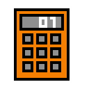

<br>
<input id="triangle" type="text" placeholder="세변의 길이를 띄어쓰기로 구분하여 입력!" style="width:300px">
<button onClick="isTriangle()"> click </button>   <!-- 수정된 부분 --> 

<br>
<p id="outPut"></p> 

<script>

function isTriangle() {
	var tLen = document.querySelector("#triangle").value
	var tLenAry = tLen.split(' ') //공백으로 나뉘어진 데이터가 tLenAry배열로 만들어짐

	var a = Number(tLenAry[0]) // 문자열을 숫자로 바꿉니다.
	var b = Number(tLenAry[1])
	var c = Number(tLenAry[2])

	var max =a;
	if(b>max) {max=b;}
	if(c>max) {max=c;}
	
	if(a+b+c-max>max) {
		document.querySelector("#outPut").innerHTML="삼각형을 만들 수 있습니다."
	}
	else
	{
		document.querySelector("#outPut").innerHTML="삼각형을 만들 수 없습니다."
	}	

	
}


</script>


